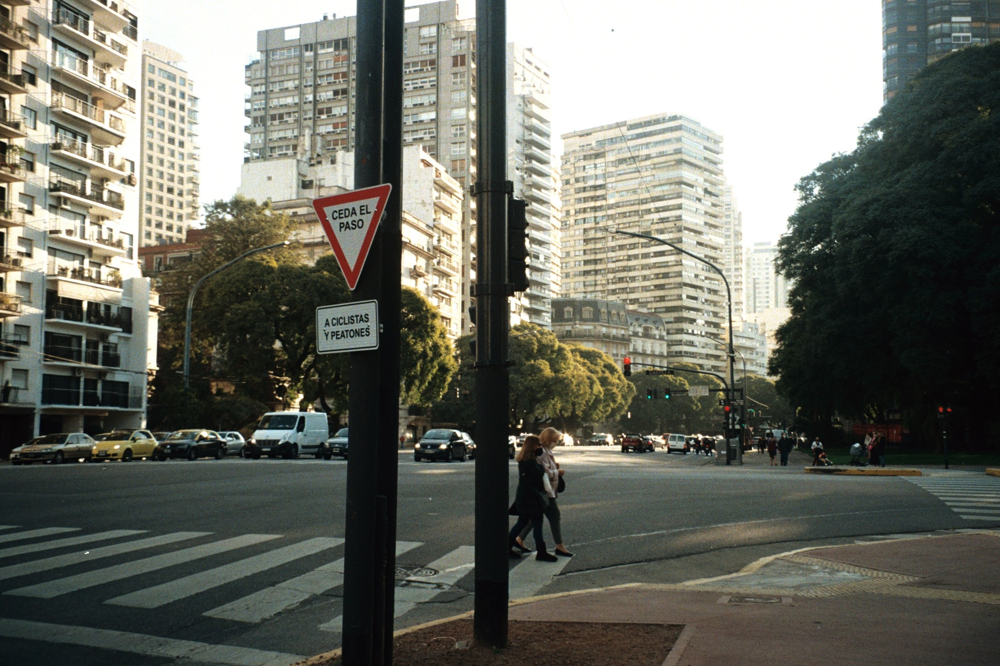

Sobre mi
Hola! Soy Ine, e hice esta página para compartir un poco de mi “hobby”, no se si llamarlo así, que es la fotografía. Empecé a sacar fotos analógicas a principios de 2021, tan solo para probar, pensando que lo iba a hacer una única vez, pero me terminé enamorando de este estilo de fotografía, y desde entonces llevo mi cámara por todos lados. Aparte de mi celular, es la forma que utilizo para capturar momentos de mi vida y de la gente que me rodea diariamente, como hacían mis papás cuando era chica.
Atrapar el momento, y tener que esperar a que se revelen los rollos para ver como salieron las fotos es un proceso que me encanta. La emoción y ansiedad hasta que te llegan las fotos es muy real. Mismo, te terminas olvidando de cuando y cuando no sacaste fotos; siempre es una sorpresa cuando las tienes en tus manos y ves que salió.
Principalmente la llevo si hago algún viaje, algún paseo por Buenos Aires con mis amigas, ocasiones especiales o tan solo si me dan ganas de llevarla. Trato de no sobre pensar tanto y sacar foto de lo que me de la gana. Pero hay una realidad que los rollos son muy caros entonces tampoco saco foto de absolutamente todo. Comprar un rollo hoy en día es casi que imposible, pero trato de ahorrar para hacerlo, ya que me gusta tanto. No me creo una gran fotografa ni nada por el estilo, tan solo saco fotos porque disfruto hacerlo.